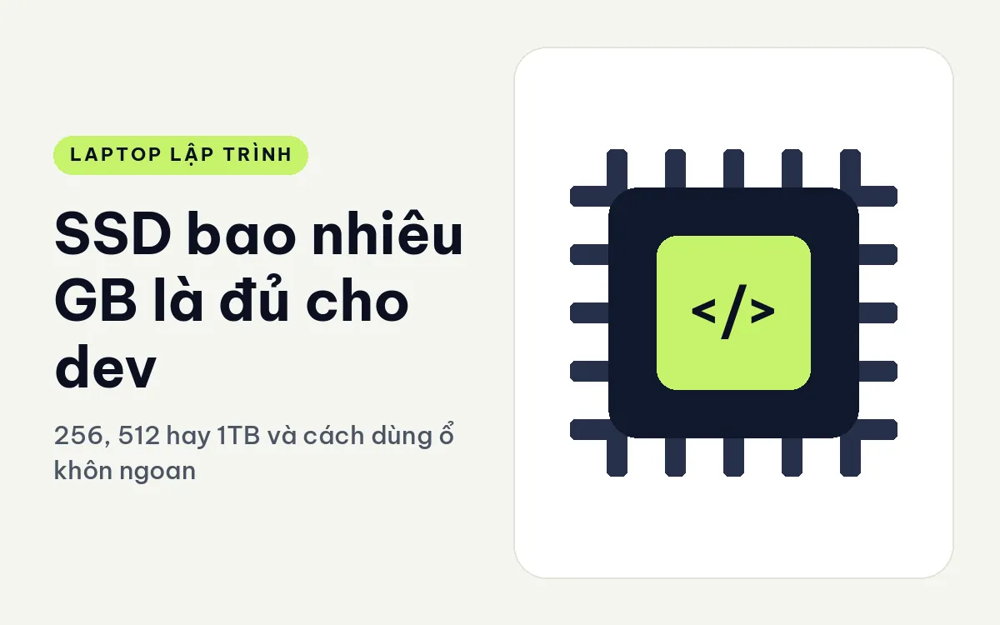

Laptop cho lập trình viên - ghi chú chọn máy của Cà Phê Code
 Bài mới nhất, So sánh
Bài mới nhất, So sánhX1 Carbon Gen 14 hay XPS 13 cho dev hay di chuyển - Hai máy dưới 1 kg, khác ở đâu
So sánh ThinkPad X1 Carbon Gen 14 và Dell XPS 13 2026 cho dev hay mang máy đi: cân nặng, màn OLED hay 2.5K, RAM hàn, cổng kết nối và cấu hình đang bán.09/11/2026Đọc bàiBài mới nhất
Những bài mình vừa ghi xong.
 So sánh
So sánhX1 Carbon Gen 14 hay ThinkPad T14 Gen 7 cho dev - Siêu nhẹ hay dễ sửa
So sánh ThinkPad X1 Carbon Gen 14 Aura Edition và ThinkPad T14 Gen 7 cho dev: dưới 1 kg hay 1,29 kg, RAM hàn hay LPCAMM2, màn OLED và cổng kết nối.09/11/2026 So sánh
So sánhThinkPad T1G Gen 8 hay P1 Gen 8 cho dev - GeForce RTX hay RTX PRO
So sánh ThinkPad T1G Gen 8 và ThinkPad P1 Gen 8 cho dev: card GeForce hay RTX PRO, màn OLED, RAM LPCAMM2, SSD Gen5, cân nặng, pin và các cấu hình đang bán.09/11/2026 So sánh
So sánhThinkPad T1G Gen 8 hay Dell Pro Max 14 cho dev - Card RTX GeForce hay RTX PRO
So sánh ThinkPad T1G Gen 8 và Dell Pro Max 14 MC14250 cho dev: màn 16 inch hay 14 inch, RTX 5060 hay RTX PRO 500, RAM LPCAMM2 và các cấu hình đang bán.09/11/2026 So sánh
So sánhThinkPad T14 Gen 7 hay Gen 6 cho lập trình - Khác nhau ở đâu, nên chọn bản nào
So sánh ThinkPad T14 Gen 7 2026 với Gen 6 2025 cho người code: cân nặng, pin, RAM LPCAMM2, các bản cấu hình đang bán và cách chọn đời nào hợp việc của bạn.09/11/2026 So sánh
So sánhThinkPad T14 Gen 7 hay EliteBook 8 G2i cho lập trình - Hai máy doanh nhân 14 inch 2026
So sánh ThinkPad T14 Gen 7 và HP EliteBook 8 G2i 14 đời 2026 cho dev: cân nặng, cổng, RAM, SSD, màn hình và cấu hình đang bán để chọn đúng một máy.09/11/2026 So sánh
So sánhThinkPad P16 Gen 3 hay Dell Pro Max 18 Plus cho dev - Hai máy trạm nặng, màn lớn
So sánh ThinkPad P16 Gen 3 và Dell Pro Max 18 Plus cho dev: cân nặng 2,54 kg hay 3,25 kg, RAM SODIMM 192GB, card RTX PRO 4000, cổng và cấu hình đang bán.09/11/2026So sánh
Đặt hai máy cạnh nhau, nói rõ khác ở chỗ nào và ai hợp máy nào. 20 bài
So sánhX1 Carbon Gen 14 hay XPS 13 cho dev hay di chuyển - Hai máy dưới 1 kg, khác ở đâu
So sánh ThinkPad X1 Carbon Gen 14 và Dell XPS 13 2026 cho dev hay mang máy đi: cân nặng, màn OLED hay 2.5K, RAM hàn, cổng kết nối và cấu hình đang bán.09/11/2026So sánhX1 Carbon Gen 14 hay ThinkPad T14 Gen 7 cho dev - Siêu nhẹ hay dễ sửa
So sánh ThinkPad X1 Carbon Gen 14 Aura Edition và ThinkPad T14 Gen 7 cho dev: dưới 1 kg hay 1,29 kg, RAM hàn hay LPCAMM2, màn OLED và cổng kết nối.09/11/2026So sánhThinkPad T1G Gen 8 hay P1 Gen 8 cho dev - GeForce RTX hay RTX PRO
So sánh ThinkPad T1G Gen 8 và ThinkPad P1 Gen 8 cho dev: card GeForce hay RTX PRO, màn OLED, RAM LPCAMM2, SSD Gen5, cân nặng, pin và các cấu hình đang bán.09/11/2026Các bài còn lại
- ThinkPad T1G Gen 8 hay Dell Pro Max 14 cho dev - Card RTX GeForce hay RTX PRO09/11/2026
- ThinkPad T14 Gen 7 hay Gen 6 cho lập trình - Khác nhau ở đâu, nên chọn bản nào09/11/2026
- ThinkPad T14 Gen 7 hay EliteBook 8 G2i cho lập trình - Hai máy doanh nhân 14 inch 202609/11/2026
- ThinkPad P16 Gen 3 hay Dell Pro Max 18 Plus cho dev - Hai máy trạm nặng, màn lớn09/11/2026
- ThinkPad P16 Gen 3 hay Dell Pro Max 16 Plus cho dev - Hai máy trạm 16 inch nhiều nhân09/11/2026
- ThinkPad P1 Gen 8 hay Dell Pro Max 16 Premium cho dev - Hai máy trạm mỏng cao cấp09/11/2026
- ThinkPad E14 Gen 8 hay ThinkBook 14 G8 cho dev - Hai máy Lenovo 14 inch tầm trung09/11/2026
- ThinkPad E14 Gen 8 hay IdeaPad Slim 3 cho dev - Hai máy Lenovo 14 inch09/11/2026
- IdeaPad Slim 3 hay HP ProBook 4 G2i cho dev - Hai máy 14 inch giá mềm cho người mới09/11/2026
- EliteBook 8 G2i hay ProBook 4 G2i cho dev - Hai máy HP cùng chip Core Ultra 509/11/2026
- Dell XPS 16 hay ThinkPad P1 Gen 8 cho dev - Máy 16 inch mỏng, có card rời hay không09/11/2026
- Dell XPS 13 hay XPS 16 cho dev - Chọn nhẹ 13 inch hay rộng 16 inch09/11/2026
- Dell XPS 13 hay Dell Pro 14 cho dev - Cùng hãng, một máy đẹp một máy bền09/11/2026
- Dell Pro Max 16 hay Pro Max 16 Plus cho dev - Máy trạm 2,2 kg hay quái vật 2,55 kg09/11/2026
- Dell Pro Max 16 Premium hay 16 Plus cho dev - Mỏng nhẹ có OLED hay nặng ký chip HX09/11/2026
- Dell Pro Max 14 hay Pro Max 14 Premium cho dev - Khác nhau ở cân nặng, cổng và card đồ họa09/11/2026
- Dell Pro 14 hay ThinkPad T14 Gen 6 cho dev - Máy doanh nhân 14 inch đời 202509/11/2026
Đánh giá máy
Từng mẫu máy nhìn dưới con mắt người viết code: cân nặng, bàn phím, cổng, tản nhiệt. 20 bài
 Đánh giá máy
Đánh giá máyLenovo ThinkPad X1 Carbon Gen 14 cho lập trình - Dưới 1kg, màn OLED và 3 cấu hình
ThinkPad X1 Carbon Gen 14 Aura Edition có 3 cấu hình, nặng dưới 1kg, màn OLED 2.8K. Hợp code web, backend, mobile khi đi nhiều; RAM hàn nên chọn đủ từ đầu.08/11/2026 Đánh giá máy
Đánh giá máyLenovo ThinkPad T1G Gen 8 (2026) cho lập trình - RTX 5060, 5070 và RAM LPCAMM2 thay được
ThinkPad T1G Gen 8 (2026) có 2 cấu hình: RTX 5060 32GB và RTX 5070 64GB OLED, nặng 1,84kg, pin 90Wh. Hợp AI, CUDA, game dev, Docker và build nặng.08/11/2026 Đánh giá máy
Đánh giá máyLenovo ThinkPad T14 Gen 7 (2026) cho lập trình - RAM thay được, đủ cổng và 2 cấu hình
ThinkPad T14 Gen 7 (2026) có 2 cấu hình Core Ultra 5 và Ultra 7, RAM LPCAMM2 32GB thay được, có cổng LAN. Hợp web, backend, DevOps và chạy Docker.08/11/2026Các bài còn lại
- Lenovo ThinkPad T14 Gen 6 (2025) cho lập trình - Máy 1,53kg, 3 cấu hình, có bản No OS08/11/2026
- Lenovo ThinkPad P16 Gen 3 cho lập trình - Workstation 2,54kg, RAM tới 192GB, 2 cấu hình08/11/2026
- Lenovo ThinkPad P1 Gen 8 cho lập trình - Workstation 1,84kg, RAM LPCAMM2 và 2 cấu hình08/11/2026
- Lenovo ThinkPad E14 Gen 8 (2026) cho lập trình - Vỏ nhôm, 2 chip Intel và AMD08/11/2026
- Lenovo ThinkBook 14 G8 IRL (2025) cho lập trình - Chip H, nâng RAM 64GB và 1 cấu hình08/11/2026
- Lenovo IdeaPad Slim 3 14 (2026) cho lập trình - Máy 1,43kg cho sinh viên, 1 cấu hình08/11/2026
- HP ProBook 4 G2i 14 cho lập trình - Màn cảm ứng, 16GB và 1 cấu hình cho sinh viên08/11/2026
- HP EliteBook 8 G2i 14 cho lập trình - Máy 1,4kg, RAM hàn 16GB và 1 cấu hình08/11/2026
- Dell XPS 16 DA16260 (2026) cho lập trình - Màn 16 inch, pin 70Wh, 1 cấu hình08/11/2026
- Dell XPS 13 DX13260 (2026) cho lập trình - 0,9kg, RAM hàn và 6 cấu hình08/11/2026
- Dell Pro Max 18 Plus MB18250 cho lập trình - Máy trạm 3,25kg, 1 cấu hình duy nhất08/11/2026
- Dell Pro Max 16 Premium MA16250 cho lập trình - 4 cấu hình, RTX PRO tới 12GB08/11/2026
- Dell Pro Max 16 Plus MB16250 cho lập trình - Máy trạm 2,55kg và 4 cấu hình08/11/2026
- Dell Pro Max 16 MC16250 cho lập trình - Pin 96Wh, RAM nâng tới 64GB và 3 cấu hình08/11/2026
- Dell Pro Max 14 Premium MA14250 cho lập trình - 1,61kg, RTX PRO và 3 cấu hình08/11/2026
- Dell Pro Max 14 MC14250 cho lập trình - RAM LPCAMM2 nâng được và 2 cấu hình08/11/2026
- Dell Pro 14 PC14250 (2025) cho lập trình - Máy bền 1,35kg, đủ cổng, 1 cấu hình08/11/2026
Chọn máy
Chọn laptop theo công việc cụ thể: web, mobile, Docker, dữ liệu, game, nhúng. 18 bài
 Chọn máy
Chọn máyRAM hàn hay RAM rời cho dev - nên chọn kiểu nào khi mua laptop lập trình
So sánh RAM hàn, RAM khe SO-DIMM và LPCAMM2 cho dev: nâng cấp được không, tốc độ và độ gọn khác nhau ra sao, kèm máy đang bán đúng từng kiểu.09/11/2026 Chọn máy
Chọn máyMáy trạm di động có cần cho dev - khi nào đáng và khi nào là dư
Máy trạm di động (mobile workstation) khác laptop thường ở đâu, dev nào cần, dev nào không, về tản nhiệt, RAM, bảo hành, kèm máy đang bán.09/11/2026 Chọn máy
Chọn máyLaptop cho sinh viên công nghệ thông tin - dùng đủ bốn năm và máy đang bán hợp
Chọn laptop cho sinh viên CNTT: cấu hình nào đủ dùng bốn năm đại học, có cần card rời không, pin, trọng lượng, cùng hai máy đang bán hợp để học và làm đồ án.09/11/2026Các bài còn lại
- Laptop cho người mới học code - cấu hình vừa đủ, đừng mua dư và máy đang bán hợp09/11/2026
- Laptop cho lập trình web fullstack - cấu hình vừa đủ và máy nên chọn09/11/2026
- Laptop cho lập trình nhúng và IoT - cổng kết nối, RAM và máy đang bán hợp09/11/2026
- Laptop cho lập trình game Unity và Unreal - GPU, RAM và máy đang bán nên chọn09/11/2026
- Laptop cho lập trình Java Spring và IntelliJ - RAM, CPU và máy đang bán hợp09/11/2026
- Laptop cho Flutter và React Native - RAM, giả lập Android và máy đang bán hợp09/11/2026
- Laptop cho lập trình .NET và Visual Studio - cấu hình nên chọn và máy đang bán09/11/2026
- Laptop cho DevOps và cloud - chạy Docker, Kubernetes cục bộ và máy đang bán hợp09/11/2026
- Laptop cho dev freelance và làm việc từ xa - pin, webcam, mạng và máy đang bán hợp09/11/2026
- Laptop cho data science và Python - RAM, CPU và card đồ họa cần gì09/11/2026
- Laptop cho Android Studio và giả lập - RAM, CPU và SSD cần bao nhiêu09/11/2026
- Laptop chạy WSL2 và máy ảo - RAM, CPU, ảo hóa và máy đang bán hợp09/11/2026
- Laptop chạy LLM cục bộ cho dev - VRAM, RAM và băng thông cần gì09/11/2026
- Laptop chạy Docker và Kubernetes tại máy - RAM, nhân CPU và SSD nên có09/11/2026
- Laptop 14 inch hay 16 inch cho dev - cân nặng, màn hình và hiệu năng đổi lấy nhau thế nào09/11/2026
Kiến thức
RAM, SSD, CPU, pin, tản nhiệt và những thông số nên hiểu trước khi mua. 13 bài
 Kiến thức
Kiến thứcTản nhiệt khi build lâu trên laptop - vì sao máy hạ xung và cách giữ hiệu năng ổn định
Giải thích hiện tượng laptop hạ xung khi build lâu: thermal throttling, giới hạn công suất, quạt, ống đồng, mẹo giữ mát và máy đang bán phù hợp.09/11/2026
Kiến thứcSSD bao nhiêu GB là đủ cho dev - 256, 512 hay 1TB và cách dùng ổ khôn ngoan
Giải thích dung lượng SSD cho dev: 256GB, 512GB hay 1TB, thứ gì chiếm ổ nhiều nhất, cách dọn và khi nào nên nâng, kèm ví dụ máy đang bán. Kèm cách dọn ổ.09/11/2026 Kiến thức
Kiến thứcPin và sạc laptop dev đi làm - Wh, công suất sạc và thói quen giúp pin bền
Cách đọc dung lượng pin Wh, thời lượng thực tế, sạc USB-C PD và adapter lớn cho laptop dev, thói quen giữ pin bền và các máy đang bán đáng cân nhắc.09/11/2026Các bài còn lại
- NPU trên laptop dev dùng được gì - TOPS là gì và khi nào bạn thực sự cần09/11/2026
- Nâng cấp RAM và SSD sau khi mua laptop dev - làm được không, làm thế nào cho an toàn09/11/2026
- Màn hình tỉ lệ 16 trên 10 và độ phân giải khi code - FHD+, 2.5K hay OLED09/11/2026
- Intel Core Ultra và Ryzen cho dev - đọc tên chip, so thế hệ và chọn theo việc09/11/2026
- GPU rời có cần cho lập trình không - khi nào cần, khi nào bỏ qua09/11/2026
- CPU hậu tố U, H, HX khác nhau gì - dòng nào hợp build code trên laptop09/11/2026
- Cổng Thunderbolt và USB4 cho dev - nối màn ngoài, ổ nhanh và dock sao cho đúng09/11/2026
- Bảo mật laptop dev - TPM, vân tay, mã hóa ổ và những thiết lập nên bật09/11/2026
- Bàn phím laptop gõ code cả ngày - độ nảy phím, bố cục và cách thử trước khi mua09/11/2026
- Lập trình viên cần bao nhiêu RAM - Chọn 16 GB, 32 GB hay 64 GB?08/11/2026
Máy mình nhắc tới
Những mẫu hay xuất hiện trong bài, gom theo nhu cầu. Bấm vào tên máy để xem cấu hình đầy đủ.
Gọn nhẹ, mang đi làm mỗi ngày
Hợp với lập trình web, mobile, backend chạy trên server. Ưu tiên máy nhẹ, pin lâu, bàn phím tốt.
- LenovoLenovo ThinkPad T14 Gen 7 (2026)Dòng ThinkPad T nổi tiếng về bàn phím, hợp người gõ code nhiều giờ liền.
- DellDELL XPS 13 DX13260 (2026)Nhỏ gọn, màn hình đẹp, dễ mang theo khắp nơi.
- HPHP EliteBook 8 G2i 14 Next Gen AI (2026)Máy doanh nhân vỏ chắc, bảo mật tốt cho dân code làm ở công ty.
- LenovoLenovo ThinkPad X1 Carbon Gen 14 | Aura Edition (2026)Máy nhẹ nhất dòng ThinkPad mà vẫn đủ sức code cả ngày.
Tầm giá dễ mua cho sinh viên và người mới đi làm
Máy bền, bàn phím tốt, đủ sức học và làm dự án đầu tay mà không phải bỏ quá nhiều tiền.
- LenovoLenovo ThinkPad T14 Gen 6 (2025)Bản dễ mua của dòng T, vẫn giữ bàn phím và độ bền quen thuộc.
- DellDELL Pro Max 14 MC14250 - Mobile Workstation (2025)Màn hình 14 inch gọn, dòng máy trạm mới của Dell, hợp người học IT cần máy bền.
- DellDELL Pro Max 16 MC16250 - Mobile Workstation (2025)Màn hình lớn để chia đôi cửa sổ code và tài liệu.
- DellDELL Pro 14 PC14250 (2025)Máy văn phòng 14 inch giá mềm, đủ cho học lập trình và làm bài tập nhóm.
- LenovoLenovo IdeaPad Slim 3 14 inch (2026)Mỏng nhẹ, pin ổn, hợp sinh viên mang lên lớp mỗi ngày.
- LenovoLenovo ThinkBook 14 G8 IRL (2025)Vỏ kim loại, nhiều cổng, gõ code lâu không mỏi tay.
- HPHP ProBook 4 G2i 14 AI (2026)Dòng doanh nghiệp đời mới, bền và dễ nâng cấp RAM.
- LenovoLenovo ThinkPad E14 Gen 8 (2026)ThinkPad giá vừa túi tiền, bàn phím chuẩn cho người viết code nhiều.
Máy trạm cho Docker, máy ảo, build lớn và AI
Khi phải chạy nhiều container, build dự án lớn, giả lập Android hoặc thử mô hình AI tại máy, nên chọn máy trạm có RAM lớn và tản nhiệt tốt.
- LenovoLenovo ThinkPad P1 Gen 8 - Mobile WorkStation (2025)Máy trạm mỏng, màn hình 16 inch, hợp kỹ sư phần mềm cần sức mạnh mà vẫn mang đi được.
- DellDell Pro Max 16 Premium MA16250 - Mobile Workstation (2025)Máy trạm Dell bản cao để chạy nhiều tác vụ nặng cùng lúc.
- DellDELL XPS 16 DA16260 (2026)Vừa code vừa làm đồ hoạ, dựng video trên một máy đẹp.
- DellDELL Pro Max 14 Premium MA14250 - Mobile Workstation (2025)Máy trạm 14 inch gọn nhẹ, đủ sức chạy Docker và máy ảo khi đi công tác.
- DellDELL Pro Max 16 Plus MB16250 - Mobile Workstation (2025)Card đồ hoạ rời mạnh, hợp build lớn và thử mô hình AI tại máy.
- LenovoLenovo ThinkPad T1G Gen 8 (2026)ThinkPad có card rời, vừa làm việc nặng vừa giữ bàn phím quen thuộc.
- LenovoLenovo ThinkPad P16 Gen 3 - Mobile WorkStation (2025)Máy trạm 16 inch nhiều khe RAM, chạy cả cụm container không đuối.
- DellDELL Pro Max 18 Plus MB18250 - Mobile Workstation (2025)Màn hình 18 inch lớn nhất dòng, cấu hình cao cho việc nặng nhất.
Theo dòng máy
Mỗi dòng có nhiều cấu hình hơn các mẫu ở trên.
- LENOVOThinkPad T SeriesDòng chủ lực, bàn phím gõ êm và bền.
- LENOVOThinkPad X SeriesMỏng nhẹ cao cấp như X1 Carbon, X1 2-in-1.
- LENOVOThinkPad P SeriesMáy trạm cho đồ hoạ, kỹ thuật, AI.
- DELLDell Pro MaxThế hệ máy trạm mới của Dell từ năm 2025.
- DELLDell XPSThiết kế đẹp, mỏng nhẹ, màn hình sắc nét.